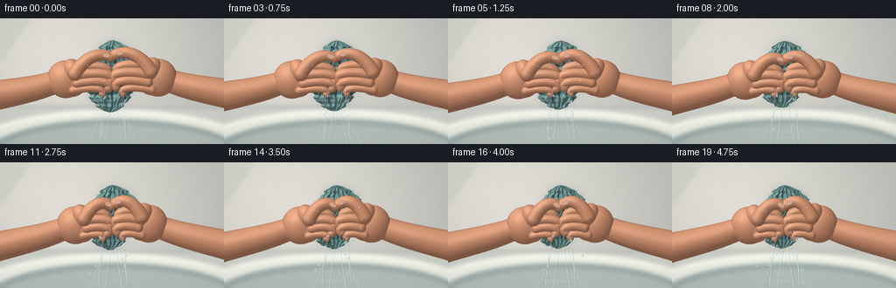
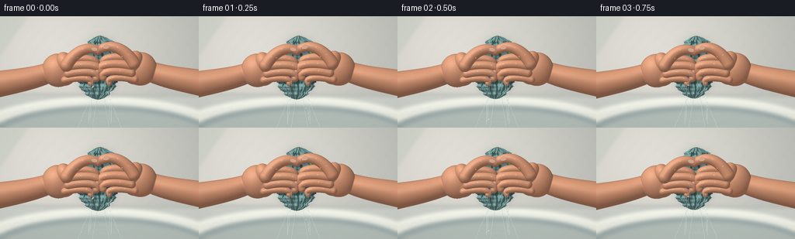

CODING AGENTS AS PIXEL WORLD MODELS
traex/GPT-6.1-Sol · phygen_012
点击播放 · 原生 RGB 像素
逐轮保存的候选
回放视频、检查图与代码变化。
每份候选均可单独播放。实际图片检查记录在下方工具轨迹中。
候选 01播放与检查图
点击播放 · 原生 RGB 像素


展开代码变化
--- 上一保存版本
+++ 本次保存版本
@@ -0,0 +1,442 @@
+"""A deterministic, entirely procedural close-up of hands wringing a wet towel.
+Geometry, cotton pile, skin shading, and ballistic water are made with numpy/PIL.
+"""
+from pathlib import Path
+import json
+import math
+import numpy as np
+from PIL import Image, ImageDraw, ImageFilter
+from artifact_io import save
+
+ROOT = Path(__file__).resolve().parent
+SPEC = json.loads((ROOT / 'task_spec.json').read_text())
+S = 3
+W, H = SPEC['width'], SPEC['height']
+WW, HH = W*S, H*S
+Y, X = np.mgrid[0:HH, 0:WW].astype(np.float32)
+X = (X+.5)/S
+Y = (Y+.5)/S
+rng = np.random.default_rng(1226)
+
+# Repeatable small-scale texture; material coordinates keep it attached to objects.
+def noise(x,y):
+ return (np.sin(x*2.31+y*1.74)+np.sin(x*5.79-y*3.19)*.48+
+ np.sin(x*13.53+y*9.71)*.22+np.sin(x*27.71-y*21.9)*.1)/1.8
+
+def pilarr(im):
+ return np.asarray(im).astype(np.float32)
+
+def background():
+ # Warm, unfocused plaster and a porcelain basin in soft window light.
+ light = np.exp(-((X-52)/176)**2-((Y-30)/151)**2)
+ col = np.stack([183+43*light,185+39*light,179+37*light],axis=-1)
+ col += (noise(X*.16,Y*.16)*.7)[...,None]
+ im = Image.fromarray(np.clip(col,0,255).astype('uint8'))
+ d=ImageDraw.Draw(im)
+ d.rectangle((0,102*S,WW,HH),fill=(206,209,202))
+ d.line((0,100*S,WW,103*S), fill=(177,182,175),width=2*S)
+ d.ellipse((-47*S,104*S,302*S,213*S),fill=(236,238,228))
+ d.ellipse((-20*S,115*S,282*S,205*S),fill=(158,172,170))
+ d.ellipse((-11*S,122*S,277*S,205*S),fill=(179,189,184))
+ d.arc((-44*S,105*S,302*S,211*S),180,360,fill=(250,251,240),width=4*S)
+ # Only a quiet, broad backsplash shadow, no additional water source.
+ d.polygon([(0,0),(36*S,0),(0,52*S)],fill=(211,214,205))
+ return pilarr(im.filter(ImageFilter.GaussianBlur(2.1*S)))
+BG=background()
+
+LIGHT = np.array([-.43,-.55,.715],np.float32)
+LIGHT /= np.linalg.norm(LIGHT)
+
+def normals(z):
+ gy,gx=np.gradient(z,1/S,1/S)
+ norm=np.sqrt(gx*gx+gy*gy+1)
+ return -gx/norm,-gy/norm,1/norm
+
+
+def cloth(p,t):
+ top=24.8+1.4*p
+ bottom=108-9*p
+ v=np.clip((Y-top)/(bottom-top),0,1)
+ cy=128+2.5*np.sin(v*5.2+.25)+2*p*np.sin(v*6.1)
+ # Lobes above/below the grip, a rapidly narrowing compression zone.
+ width=(24.0+6*np.sin(v*math.pi)+3.6*np.sin(v*8.5+.3))
+ width *= np.sqrt(np.clip(np.sin(np.pi*v),0,1))
+ compression=np.exp(-((Y-66)/19)**4)
+ width *= 1-(.55*p*compression)
+ width += 1.1*np.sin(Y*.62+.8)+.75*np.sin(Y*1.2)
+ width=np.maximum(width,.15)
+ u=(X-cy)/width
+ # Ragged cotton outline, top fold and tapered, uneven bottom edge.
+ edge=.986+.021*np.sin(Y*3.7)+.012*np.sin(Y*6.4)
+ mask=(np.abs(u)<edge)&(Y>top)&(Y<bottom)
+ root=np.sqrt(np.maximum(0,1-u*u))
+ foldphase=u*(14+10*p)+v*10+2*np.sin(v*12)
+ folds=(2.1+1.6*p)*np.sin(foldphase)*root
+ folds+=1.3*np.sin(u*31-v*16)*root
+ z=9+width*.59*root+folds
+ # Top is a visibly folded, rumpled bundle, not a smooth round cylinder.
+ z+=3.6*np.exp(-((Y-(top+12))/8)**2)*np.sin(u*7.3+Y*.17)*root
+ z+=1.4*np.cos(v*27+u*8)*root
+ nx,ny,nz=normals(z)
+ lam=np.clip(nx*LIGHT[0]+ny*LIGHT[1]+nz*LIGHT[2],0,1)
+ uvx=(u+1)*39
+ uvy=v*95
+ tex=noise(uvx*1.5,uvy*1.4)
+ # Fine staggered ovals make the terry-cloth loops, warped with the fabric.
+ cellx=np.mod(uvx*2.8+.38*np.sin(uvy*9),1)-.5
+ celly=np.mod(uvy*3.4,1)-.5
+ rr=np.sqrt((cellx/.41)**2+(celly/.39)**2)
+ pile=np.exp(-((rr-.71)/.19)**2)-.48*np.exp(-((rr-.30)/.23)**2)
+ wet=.18+.30*compression*(1-.45*p)
+ base=np.array([124,166,163],np.float32)
+ shade=.53+.58*lam
+ color=base[None,None,:]*shade[...,None]
+ color+=(tex*7+pile*7)[...,None]
+ color+=np.maximum(0,nz*.8+nx*.2-ny*.45-.85)[...,None]*np.array([14,19,20])
+ color-=wet[...,None]*np.array([13,14,11])
+ # Closely stitched hems along one hanging folded edge, and top fold.
+ hem=np.exp(-((u-.73-.045*np.sin(v*12))/.027)**2)
+ hem*=np.clip((v-.58)*12,0,1)
+ color-=hem[...,None]*np.array([20,23,20])
+ stitch=hem*(.5+.5*np.sin(uvy*15))
+ color+=stitch[...,None]*13
+ topcrease=np.exp(-((Y-(top+10+2*np.sin(u*4)))/.55)**2)*(1-u*u)
+ color-=np.maximum(topcrease,0)[...,None]*14
+ # Peripheral fibres give the silhouette a soft, fuzzy edge.
+ alpha=np.clip((edge-np.abs(u))*width*S,0,1)*mask
+ return np.clip(color,0,255),alpha,z,(cy,width,top,bottom)
+
+# Analytic curved, tapered capsule/ellipsoid height-fields form continuous hands.
+def soft_merge(z,mask,new,nm,k=1.1):
+ overlap=mask&nm
+ h=np.maximum(k-np.abs(z-new),0)/k
+ zz=np.maximum(z,new)+h*h*k*.25
+ return np.where(overlap,zz,np.where(nm,new,z)),mask|nm
+
+def ellipsoid(z,mask,cx,cy,rx,ry,rz,zc,angle=0):
+ cs,sn=np.cos(angle),np.sin(angle)
+ dx=X-cx;dy=Y-cy
+ a=(cs*dx+sn*dy)/rx
+ b=(-sn*dx+cs*dy)/ry
+ q=1-a*a-b*b
+ nm=q>0
+ new=zc+rz*np.sqrt(np.maximum(q,0))
+ return soft_merge(z,mask,new,nm)
+
+def bezier(points,n=21):
+ q=np.linspace(0,1,n,dtype=np.float32)
+ pts=np.array(points,dtype=np.float32)
+ if len(points)==4:
+ return (1-q[:,None])**3*pts[0]+3*(1-q[:,None])**2*q[:,None]*pts[1]+3*(1-q[:,None])*q[:,None]**2*pts[2]+q[:,None]**3*pts[3]
+ return pts
+
+def tube(z,mask,points,r0,r1,zc,thick=1,ns=19):
+ pts=bezier(points,ns)
+ # Closest parameter on the continuous polyline, not a row of spheres.
+ best=np.full((HH,WW),1e8,np.float32)
+ bestt=np.zeros((HH,WW),np.float32)
+ for j in range(len(pts)-1):
+ a,b=pts[j],pts[j+1]
+ vx,vy=b-a
+ h=np.clip(((X-a[0])*vx+(Y-a[1])*vy)/(vx*vx+vy*vy+1e-6),0,1)
+ dist=(X-a[0]-h*vx)**2+(Y-a[1]-h*vy)**2
+ take=dist<best
+ best=np.where(take,dist,best)
+ bestt=np.where(take,(j+h)/(len(pts)-1),bestt)
+ radius=r0+(r1-r0)*bestt
+ q=1-best/(radius*radius)
+ nm=q>0
+ new=zc+radius*thick*np.sqrt(np.maximum(q,0))+1.8*np.sin(bestt*np.pi)
+ return (*soft_merge(z,mask,new,nm,.85),pts)
+
+
+def hand_geometry(p,side):
+ z=np.full((HH,WW),-1000,np.float32)
+ mask=np.zeros((HH,WW),bool)
+ right=side=='right'
+ # Opposing hand rotates a little in the wrist as pressure grows.
+ angle=(.035+.075*p)*(1 if right else -1)
+ pivot=np.array([128.,69.],np.float32)
+ def tr(pt):
+ x,y=pt
+ if right: x,y=256-x,y-1.8
+ dx,dy=x-pivot[0],y-pivot[1]
+ c,s=np.cos(angle),np.sin(angle)
+ return (pivot[0]+c*dx-s*dy,pivot[1]+s*dx+c*dy)
+ def el(cx,cy,rx,ry,rz,zc,a=0):
+ nonlocal z,mask
+ cx,cy=tr((cx,cy))
+ z,mask=ellipsoid(z,mask,cx,cy,rx,ry,rz,zc,(-a if right else a)+angle)
+ def tb(pts,r0,r1,zc,thick=1):
+ nonlocal z,mask
+ z,mask,b=tube(z,mask,[tr(q) for q in pts],r0,r1,zc,thick)
+ return b
+ shift=13*p
+ # Forearms lead naturally into narrow wrists, then broad fleshy palms.
+ tb([(-27,87),(6,81),(43+shift*.6,79),(67+shift,69)],18.3,12.8,25,1.06)
+ el(75+shift,68,21.0,21.7,16.7,32,-.19)
+ el(83+shift,74,15.7,14.3,13.2,34,-.32)
+ # Four separate curled fingers. Unequal lengths and tip locations are anatomical.
+ rows=[
+ ([(87+shift,55),(108+6*p,52+2*p),(127,55+4*p),(124-2*p,62+3*p)],5.8,4.7,45.6),
+ ([(89+shift,64),(113+5*p,60+2*p),(132,64+4*p),(127-2*p,71+2*p)],6.2,4.9,47.2),
+ ([(88+shift,73),(111+5*p,69+1*p),(129,72+4*p),(124-2*p,80+p)],5.6,4.6,46.8),
+ ([(83+shift,81),(104+6*p,77+p),(121,80+3*p),(116-p,86)],4.7,3.7,44.5)]
+ details=[]
+ for j,(pts,r0,r1,depth) in enumerate(rows):
+ # The opposite hand's fingertips meet rather than pass through each other.
+ if right:
+ pts=[(x-1.1,y+.4*j) for x,y in pts]
+ curve=tb(pts,r0,r1,depth+(1.0 if right else 0),1.1)
+ details.append((curve,r0,r1,j))
+ # Broad thenar mound and opposable thumb in front of the other fingers.
+ el(85+shift,60,11.5,16.0,12,41,-.44)
+ thumbpts=[(86+shift,62),(96+13*p,45),(113+9*p,37+6*p),(127+2*p,44+7*p)]
+ if right:
+ thumbpts=[(x-2.0,y-1.0) for x,y in thumbpts]
+ curve=tb(thumbpts,8.0,6.0,52+(1.5 if right else 0),1.04)
+ details.append((curve,8,6,4))
+ return z,mask,details,tr
+
+
+def shade_hand(z,mask,p,side):
+ # Fill hidden exterior with a near-edge value to make interior derivatives stable.
+ zz=z.copy()
+ zz[~mask]=22
+ nx,ny,nz=normals(zz)
+ lam=np.clip(nx*LIGHT[0]+ny*LIGHT[1]+nz*LIGHT[2],0,1)
+ base=np.array([190,132,103],np.float32)
+ if side=='right': base+=np.array([3,2,1])
+ color=base[None,None,:]*(.67+.41*lam[...,None])
+ color+=(lam**3)[...,None]*np.array([30,27,22])
+ # Fine pores, faint veins and flesh colour variation, not flat vector artwork.
+ tex=noise(X*1.9,Y*2.1)
+ color+=(tex*1.6)[...,None]
+ flush=(np.sin(X*.08+Y*.14)*1.8+np.sin(Y*.29-X*.09)*1.2)
+ color+=flush[...,None]*np.array([1,.32,.08])
+ vein=np.exp(-((np.sin(X*.041+Y*.092)*5+Y-78)/.65)**2)
+ color-=vein[...,None]*np.array([1.2,.3,.05])
+ # Softly wet skin specular reflection.
+ hx,hy,hz=-.23,-.3,.925
+ spec=np.clip(nx*hx+ny*hy+nz*hz,0,1)**27
+ color+=spec[...,None]*np.array([19,19,18])
+ return np.clip(color,0,255)
+
+
+def draw_curve(draw,points,fill,width):
+ draw.line([(int(x*S),int(y*S)) for x,y in points],fill=fill,width=max(1,int(width*S)),joint='curve')
+
+
+def hand_details(im,details,tr,p,side,visible):
+ # Faint curved transverse knuckle creases, trimmed nails and skin folds.
+ layer=Image.new('RGBA',(WW,HH),(0,0,0,0));d=ImageDraw.Draw(layer)
+ for curve,r0,r1,idx in details:
+ for q in ([.40,.53,.64] if idx!=4 else [.42,.49]):
+ k=int(q*(len(curve)-1)); pos=curve[k]
+ tangent=curve[min(k+1,len(curve)-1)]-curve[max(k-1,0)]
+ tangent/=np.linalg.norm(tangent)+1e-6
+ normal=np.array([-tangent[1],tangent[0]])
+ rr=(r0*(1-q)+r1*q)*.68
+ pts=[pos+normal*(rr*s)+tangent*(.5*(1-s*s)) for s in np.linspace(-1,1,14)]
+ draw_curve(d,pts,(100,63,44,57),.30)
+ draw_curve(d,[q+np.array([-.15,-.33]) for q in pts],(245,188,149,47),.22)
+ # Nail tips visible on thumbs; curled fingers show short curved nail edges.
+ if idx==4:
+ center=curve[-3]
+ tangent=curve[-1]-curve[-5];tangent/=np.linalg.norm(tangent)
+ normal=np.array([-tangent[1],tangent[0]])
+ # A small rounded trapezoid respects the oblique thumb surface.
+ path=[]
+ for a in np.linspace(0,2*np.pi,48):
+ pt=center+tangent*(4.15*np.cos(a))+normal*(2.65*np.sin(a))
+ path.append(tuple(pt*S))
+ d.polygon(path,fill=(211,167,145,230))
+ d.line(path+[path[0]],fill=(118,80,63,105),width=1)
+ hl=[center+tangent*v-normal*1.0 for v in np.linspace(-2.6,2.1,9)]
+ draw_curve(d,hl,(244,213,193,150),.36)
+ distal=[center+tangent*3.35+normal*v for v in np.linspace(-1.45,1.45,12)]
+ draw_curve(d,distal,(233,210,191,210),.6)
+ elif idx in [0,1,2]:
+ center=curve[-2]
+ tan=curve[-1]-curve[-4];tan/=np.linalg.norm(tan)+1e-6
+ norm=np.array([-tan[1],tan[0]])
+ pts=[center+norm*(s*r1*.57)+tan*(.25*(1-s*s)) for s in np.linspace(-1,1,10)]
+ draw_curve(d,pts,(221,183,158,85),.6)
+ # Palm compression crease between thumb pad and index finger.
+ pts=bezier([tr(q) for q in [(76+13*p,60),(82+13*p,67),(92+10*p,69),(97+9*p,73)]])
+ draw_curve(d,pts,(108,64,45,58),.36)
+ # Wrist creases on the near side of the forearm.
+ for i in range(2):
+ pts=bezier([tr(q) for q in [(60+13*p+i*2,62),(64+13*p+i*2,68),(62+13*p+i*2,78),(58+13*p+i*2,82)]])
+ draw_curve(d,pts,(127,86,64,32),.35)
+ ar=np.asarray(layer).copy()
+ ar[...,3]=(ar[...,3].astype(np.float32)*visible).astype(np.uint8)
+ return Image.alpha_composite(im.convert('RGBA'),Image.fromarray(ar)).convert('RGB')
+
+
+def water_line(im,points,width,amount=1):
+ """Transparent liquid: refracted scene, dark meniscus, narrow white glint."""
+ if width<.12:return im
+ mask=Image.new('L',(WW,HH),0);d=ImageDraw.Draw(mask)
+ widths=[]
+ for j in range(len(points)-1):
+ w=width*(.9-.36*j/max(1,len(points)-1))
+ draw_curve(d,[points[j],points[j+1]],255,w)
+ a=np.asarray(mask).astype(np.float32)/255
+ src=pilarr(im)
+ # A water thread bends/refocuses the image behind it.
+ shifted=np.roll(src,max(1,int(width*S*.36)),axis=1)
+ reflection=shifted*.76+np.array([48,58,61],np.float32)
+ ar=src*(1-a[...,None]*.55*amount)+reflection*(a[...,None]*.55*amount)
+ im=Image.fromarray(np.clip(ar,0,255).astype('uint8'))
+ layer=Image.new('RGBA',(WW,HH));d=ImageDraw.Draw(layer)
+ draw_curve(d,[(x+width*.29,y) for x,y in points],(69,109,119,int(87*amount)),max(.24,width*.19))
+ draw_curve(d,[(x-width*.22,y) for x,y in points],(241,252,247,int(190*amount)),max(.24,width*.20))
+ return Image.alpha_composite(im.convert('RGBA'),layer).convert('RGB')
+
+
+def water(im,p,t,bottom,front=True):
+ sec=t*4.75
+ flow=.17+.83*p
+ # Gravity narrows the clear continuous streams below the compressed cotton.
+ offsets=[-12,-4,5,12]
+ for j,offset in enumerate(offsets):
+ startx=129+offset*(1-.48*p)
+ starty=bottom-3+(j%2)*1.7
+ ww=(.45+1.3*flow)*(1 if j in [1,2] else .64)
+ if j==3:ww*=.75
+ pts=[]
+ for dy in np.linspace(0,144-starty,55):
+ wave=.25*np.sin(dy*.51-sec*10+j*2)+.13*np.sin(dy*1.3+sec*13)
+ x=startx+(.035*offset)*dy+wave*(.3+dy*.02)
+ pts.append((x,starty+dy))
+ im=water_line(im,pts,ww,.86)
+ # Water escapes from between the lower fingers in accelerated side rivulets.
+ for side in [-1,1]:
+ for j in range(2):
+ startx=129+side*(9-2*p+3*j)
+ starty=82+4*j-2*p
+ vel=side*(5.5+10*p)*(1-.3*j)
+ pts=[]
+ for age in np.linspace(0,.65,45):
+ xx=startx+vel*age+.22*np.sin(age*26+sec*8+j)
+ yy=starty+(12+9*p)*age+106*age*age
+ if yy<145:pts.append((xx,yy))
+ im=water_line(im,pts,(.22+.93*p)*(1-.28*j),.85)
+ # Ballistic droplets form a stable temporal simulation using birth timestamps.
+ layer=Image.new('RGBA',(WW,HH));d=ImageDraw.Draw(layer)
+ rate=26
+ for k in range(int((sec+.4)*rate)+1):
+ birth=k/rate-.35
+ age=sec-birth
+ if age<0 or age>.7:continue
+ bp=pressure(np.clip(birth/4.75,0,1))
+ h=(math.sin(k*73.156+2.4)*43758.5453)%1
+ h2=(math.sin(k*12.982+5.4)*19758.343)%1
+ if h>.18+.79*bp:continue
+ side=-1 if k%2 else 1
+ x0=129+side*(7+6*h2)
+ y0=83+14*((k*11)%17)/17
+ vx=side*(4+24*bp)*(h2+.3)
+ vy=11+20*h
+ xx=x0+vx*age
+ yy=y0+vy*age+108*age*age
+ if yy>139:continue
+ r=.43+.5*h2+.36*bp
+ # Tear-drop specular shape with a short exposure streak.
+ trail=min(2.3,(vy+216*age)*.012)
+ box=((xx-r)*S,(yy-r-trail)*S,(xx+r)*S,(yy+r)*S)
+ d.ellipse(box,fill=(125,160,164,125),outline=(220,241,238,190),width=1)
+ d.ellipse(((xx-r*.45)*S,(yy-r*.7)*S,(xx+.02)*S,(yy+.1)*S),fill=(252,255,248,226))
+ # Small energetic impact crowns and glancing ripples in the sink bottom.
+ for j in range(3):
+ phase=(sec*(3.6+j*.4)+j*.37)%1
+ cx=121+j*8+np.sin(sec*3+j)*2
+ cy=134+j*.8
+ rx=2.3+phase*(8+7*p);ry=.45+phase*2.1
+ a=int(110*(1-phase)*(.4+.6*p))
+ d.arc(((cx-rx)*S,(cy-ry)*S,(cx+rx)*S,(cy+ry)*S),4,178,fill=(239,250,240,a),width=1)
+ d.arc(((cx-rx)*S,(cy-ry)*S,(cx+rx)*S,(cy+ry)*S),183,355,fill=(105,139,140,a//2),width=1)
+ if phase<.55:
+ for side in [-1,1]:
+ points=[(cx+side*(1+7*u),cy-(3+7*p)*np.sin(u*np.pi)) for u in np.linspace(0,.65,12)]
+ draw_curve(d,points,(230,248,242,int(a*.8)),.32)
+ return Image.alpha_composite(im.convert('RGBA'),layer).convert('RGB')
+
+
+def wet_glints(im,p,t,details,visible):
+ layer=Image.new('RGBA',(WW,HH));d=ImageDraw.Draw(layer)
+ # Small water beads cling to finger pads and knuckles, never floating on the skin.
+ for side_i,records in enumerate(details):
+ for j,(curve,r0,r1,idx) in enumerate(records):
+ for q in [.26,.61]:
+ k=int(q*(len(curve)-1));pt=curve[k].copy()
+ pt[1]-=1.1
+ x,y=pt
+ if x<0 or x>=256 or y<0 or y>=144:continue
+ if not visible[side_i][int(y*S),int(x*S)]:continue
+ r=.47+.22*np.sin(j*3+q*4)**2
+ d.ellipse(((x-r)*S,(y-r*.6)*S,(x+r)*S,(y+r*.6)*S),fill=(107,135,132,66),outline=(248,238,211,150),width=1)
+ d.point(((x-r*.35)*S,(y-r*.35)*S),fill=(255,252,239,245))
+ return Image.alpha_composite(im.convert('RGBA'),layer).convert('RGB')
+
+
+def pressure(t):
+ return float((1-np.exp(-4.2*float(t)**1.65))/(1-np.exp(-4.2)))
+
+
+def frame(i):
+ t=i/(SPEC['frames']-1)
+ p=pressure(t)
+ # Small force tremor only once the grip is tight, with no camera wobble.
+ tension=.24*p*np.sin(t*39)
+ c,alpha,cz,info=cloth(p,t)
+ cy,width,top,bottom=info
+ hands=[hand_geometry(p,'left'),hand_geometry(p,'right')]
+ ar=BG.copy()
+ clothmask=Image.fromarray((alpha*255).astype('uint8'))
+ # Ambient cloth shadow and hand shadows onto the fabric, in consistent light.
+ sh=pilarr(clothmask.filter(ImageFilter.GaussianBlur(5*S)))/255
+ ar*=1-(sh*.105)[...,None]
+ ar=ar*(1-alpha[...,None])+c*alpha[...,None]
+ hm=(hands[0][1]|hands[1][1]).astype('uint8')*255
+ hs=Image.fromarray(hm)
+ shadow=np.asarray(hs.filter(ImageFilter.GaussianBlur(1.1*S))).astype(np.float32)/255
+ shadow=np.roll(np.roll(shadow,2*S,axis=1),3*S,axis=0)
+ ar*=1-(shadow*alpha*.27)[...,None]
+ depth=np.where(alpha>.1,cz,-200)
+ vis=[]
+ hcolors=[]
+ # Skin depth resolves the two touching grips and preserves foreground thumbs.
+ for k,(z,mask,details,tr) in enumerate(hands):
+ hc=shade_hand(z,mask,p,['left','right'][k]);hcolors.append(hc)
+ vm=mask&(z>depth)
+ ar[vm]=hc[vm]
+ depth=np.where(vm,z,depth)
+ # Final visibility for details so no wrinkles/nails show through an opposite hand.
+ for k,(z,mask,details,tr) in enumerate(hands):
+ vm=mask&(z>=depth-.02)
+ vis.append(vm)
+ im=Image.fromarray(np.clip(ar,0,255).astype('uint8'))
+ for k,(z,mask,details,tr) in enumerate(hands):
+ im=hand_details(im,details,tr,p,['left','right'][k],vis[k])
+ im=water(im,p,t,bottom)
+ im=wet_glints(im,p,t,[q[2] for q in hands],vis)
+ # Restrained photographic colour and a very subtle corner falloff.
+ rgb=np.asarray(im).astype(np.float32)
+ vignette=1-.045*((X-128)/158)**2-.035*((Y-68)/103)**2
+ rgb*=vignette[...,None]
+ im=Image.fromarray(np.clip(rgb,0,255).astype('uint8'))
+ return np.asarray(im.resize((W,H),Image.Resampling.LANCZOS)).copy()
+
+
+def main():
+ frames=[]
+ for i in range(SPEC['frames']):
+ frames.append(frame(i))
+ print(f'Rendered frame {i+1}/{SPEC["frames"]}',flush=True)
+ frames=np.stack(frames).astype(np.uint8)
+ save(frames,ROOT)
+ print('Saved RGB video artifacts.',flush=True)
+
+if __name__=='__main__':main()
可观测工具轨迹
实际执行的命令与返回图片。
命令 1exit 0
/bin/bash -lc "ls -la && cat prompt.txt && printf '\\n--- RULES ---\\n' && cat GENERATION_RULES.md && printf '\\n--- SPEC ---\\n' && cat task_spec.json"
命令 2exit 0
/bin/bash -lc "cat artifact_io.py && python - <<'PY'
import numpy,PIL
print('numpy', numpy.__version__, 'PIL',PIL.__version__)
PY"命令 3exit 0
/bin/bash -lc 'command -v ffmpeg || true'
命令 4exit 0
/bin/bash -lc "cat > generate.py <<'PY'
\"\"\"A deterministic, entirely procedural close-up of hands wringing a wet towel.
Geometry, cotton pile, skin shading, and ballistic water are made with numpy/PIL.
\"\"\"
from pathlib import Path
import json
import math
import numpy as np
from PIL import Image, ImageDraw, ImageFilter
from artifact_io import save
ROOT = Path(__file__).resolve().parent
SPEC = json.loads((ROOT / 'task_spec.json').read_text())
S = 3
W, H = SPEC['width'], SPEC['height']
WW, HH = W*S, H*S
Y, X = np.mgrid[0:HH, 0:WW].astype(np.float32)
X = (X+.5)/S
Y = (Y+.5)/S
rng = np.random.default_rng(1226)
# Repeatable small-scale texture; material coordinates keep it attached to objects.
def noise(x,y):
return (np.sin(x*2.31+y*1.74)+np.sin(x*5.79-y*3.19)*.48+
np.sin(x*13.53+y*9.71)*.22+np.sin(x*27.71-y*21.9)*.1)/1.8
def pilarr(im):
return np.asarray(im).astype(np.float32)
def background():
# Warm, unfocused plaster and a porcelain basin in soft window light.
light = np.exp(-((X-52)/176)**2-((Y-30)/151)**2)
col = np.stack([183+43*light,185+39*light,179+37*light],axis=-1)
col += (noise(X*.16,Y*.16)*.7)[...,None]
im = Image.fromarray(np.clip(col,0,255).astype('uint8'))
d=ImageDraw.Draw(im)
d.rectangle((0,102*S,WW,HH),fill=(206,209,202))
d.line((0,100*S,WW,103*S), fill=(177,182,175),width=2*S)
d.ellipse((-47*S,104*S,302*S,213*S),fill=(236,238,228))
d.ellipse((-20*S,115*S,282*S,205*S),fill=(158,172,170))
d.ellipse((-11*S,122*S,277*S,205*S),fill=(179,189,184))
d.arc((-44*S,105*S,302*S,211*S),180,360,fill=(250,251,240),width=4*S)
# Only a quiet, broad backsplash shadow, no additional water source.
d.polygon([(0,0),(36*S,0),(0,52*S)],fill=(211,214,205))
return pilarr(im.filter(ImageFilter.GaussianBlur(2.1*S)))
BG=background()
LIGHT = np.array([-.43,-.55,.715],np.float32)
LIGHT /= np.linalg.norm(LIGHT)
def normals(z):
gy,gx=np.gradient(z,1/S,1/S)
norm=np.sqrt(gx*gx+gy*gy+1)
return -gx/norm,-gy/norm,1/norm
def cloth(p,t):
top=24.8+1.4*p
bottom=108-9*p
v=np.clip((Y-top)/(bottom-top),0,1)
cy=128+2.5*np.sin(v*5.2+.25)+2*p*np.sin(v*6.1)
# Lobes above/below the grip, a rapidly narrowing compression zone.
width=(24.0+6*np.sin(v*math.pi)+3.6*np.sin(v*8.5+.3))
width *= np.sqrt(np.clip(np.sin(np.pi*v),0,1))
compression=np.exp(-((Y-66)/19)**4)
width *= 1-(.55*p*compression)
width += 1.1*np.sin(Y*.62+.8)+.75*np.sin(Y*1.2)
width=np.maximum(width,.15)
u=(X-cy)/width
# Ragged cotton outline, top fold and tapered, uneven bottom edge.
edge=.986+.021*np.sin(Y*3.7)+.012*np.sin(Y*6.4)
mask=(np.abs(u)<edge)&(Y>top)&(Y<bottom)
root=np.sqrt(np.maximum(0,1-u*u))
foldphase=u*(14+10*p)+v*10+2*np.sin(v*12)
folds=(2.1+1.6*p)*np.sin(foldphase)*root
folds+=1.3*np.sin(u*31-v*16)*root
z=9+width*.59*root+folds
# Top is a visibly folded, rumpled bundle, not a smooth round cylinder.
z+=3.6*np.exp(-((Y-(top+12))/8)**2)*np.sin(u*7.3+Y*.17)*root
z+=1.4*np.cos(v*27+u*8)*root
nx,ny,nz=normals(z)
lam=np.clip(nx*LIGHT[0]+ny*LIGHT[1]+nz*LIGHT[2],0,1)
uvx=(u+1)*39
uvy=v*95
tex=noise(uvx*1.5,uvy*1.4)
# Fine staggered ovals make the terry-cloth loops, warped with the fabric.
cellx=np.mod(uvx*2.8+.38*np.sin(uvy*9),1)-.5
celly=np.mod(uvy*3.4,1)-.5
rr=np.sqrt((cellx/.41)**2+(celly/.39)**2)
pile=np.exp(-((rr-.71)/.19)**2)-.48*np.exp(-((rr-.30)/.23)**2)
wet=.18+.30*compression*(1-.45*p)
base=np.array([124,166,163],np.float32)
shade=.53+.58*lam
color=base[None,None,:]*shade[...,None]
color+=(tex*7+pile*7)[...,None]
color+=np.maximum(0,nz*.8+nx*.2-ny*.45-.85)[...,None]*np.array([14,19,20])
color-=wet[...,None]*np.array([13,14,11])
# Closely stitched hems along one hanging folded edge, and top fold.
hem=np.exp(-((u-.73-.045*np.sin(v*12))/.027)**2)
hem*=np.clip((v-.58)*12,0,1)
color-=hem[...,None]*np.array([20,23,20])
stitch=hem*(.5+.5*np.sin(uvy*15))
color+=stitch[...,None]*13
topcrease=np.exp(-((Y-(top+10+2*np.sin(u*4)))/.55)**2)*(1-u*u)
color-=np.maximum(topcrease,0)[...,None]*14
# Peripheral fibres give the silhouette a soft, fuzzy edge.
alpha=np.clip((edge-np.abs(u))*width*S,0,1)*mask
return np.clip(color,0,255),alpha,z,(cy,width,top,bottom)
# Analytic curved, tapered capsule/ellipsoid height-fields form continuous hands.
def soft_merge(z,mask,new,nm,k=1.1):
overlap=mask&nm
h=np.maximum(k-np.abs(z-new),0)/k
zz=np.maximum(z,new)+h*h*k*.25
return np.where(overlap,zz,np.where(nm,new,z)),mask|nm
def ellipsoid(z,mask,cx,cy,rx,ry,rz,zc,angle=0):
cs,sn=np.cos(angle),np.sin(angle)
dx=X-cx;dy=Y-cy
a=(cs*dx+sn*dy)/rx
b=(-sn*dx+cs*dy)/ry
q=1-a*a-b*b
nm=q>0
new=zc+rz*np.sqrt(np.maximum(q,0))
return soft_merge(z,mask,new,nm)
def bezier(points,n=21):
q=np.linspace(0,1,n,dtype=np.float32)
pts=np.array(points,dtype=np.float32)
if len(points)==4:
return (1-q[:,None])**3*pts[0]+3*(1-q[:,None])**2*q[:,None]*pts[1]+3*(1-q[:,None])*q[:,None]**2*pts[2]+q[:,None]**3*pts[3]
return pts
def tube(z,mask,points,r0,r1,zc,thick=1,ns=19):
pts=bezier(points,ns)
# Closest parameter on the continuous polyline, not a row of spheres.
best=np.full((HH,WW),1e8,np.float32)
bestt=np.zeros((HH,WW),np.float32)
for j in range(len(pts)-1):
a,b=pts[j],pts[j+1]
vx,vy=b-a
h=np.clip(((X-a[0])*vx+(Y-a[1])*vy)/(vx*vx+vy*vy+1e-6),0,1)
dist=(X-a[0]-h*vx)**2+(Y-a[1]-h*vy)**2
take=dist<best
best=np.where(take,dist,best)
bestt=np.where(take,(j+h)/(len(pts)-1),bestt)
radius=r0+(r1-r0)*bestt
q=1-best/(radius*radius)
nm=q>0
new=zc+radius*thick*np.sqrt(np.maximum(q,0))+1.8*np.sin(bestt*np.pi)
return (*soft_merge(z,mask,new,nm,.85),pts)
def hand_geometry(p,side):
z=np.full((HH,WW),-1000,np.float32)
mask=np.zeros((HH,WW),bool)
right=side=='right'
# Opposing hand rotates a little in the wrist as pressure grows.
angle=(.035+.075*p)*(1 if right else -1)
pivot=np.array([128.,69.],np.float32)
def tr(pt):
x,y=pt
if right: x,y=256-x,y-1.8
dx,dy=x-pivot[0],y-pivot[1]
c,s=np.cos(angle),np.sin(angle)
return (pivot[0]+c*dx-s*dy,pivot[1]+s*dx+c*dy)
def el(cx,cy,rx,ry,rz,zc,a=0):
nonlocal z,mask
cx,cy=tr((cx,cy))
z,mask=ellipsoid(z,mask,cx,cy,rx,ry,rz,zc,(-a if right else a)+angle)
def tb(pts,r0,r1,zc,thick=1):
nonlocal z,mask
z,mask,b=tube(z,mask,[tr(q) for q in pts],r0,r1,zc,thick)
return b
shift=13*p
# Forearms lead naturally into narrow wrists, then broad fleshy palms.
tb([(-27,87),(6,81),(43+shift*.6,79),(67+shift,69)],18.3,12.8,25,1.06)
el(75+shift,68,21.0,21.7,16.7,32,-.19)
el(83+shift,74,15.7,14.3,13.2,34,-.32)
# Four separate curled fingers. Unequal lengths and tip locations are anatomical.
rows=[
([(87+shift,55),(108+6*p,52+2*p),(127,55+4*p),(124-2*p,62+3*p)],5.8,4.7,45.6),
([(89+shift,64),(113+5*p,60+2*p),(132,64+4*p),(127-2*p,71+2*p)],6.2,4.9,47.2),
([(88+shift,73),(111+5*p,69+1*p),(129,72+4*p),(124-2*p,80+p)],5.6,4.6,46.8),
([(83+shift,81),(104+6*p,77+p),(121,80+3*p),(116-p,86)],4.7,3.7,44.5)]
details=[]
for j,(pts,r0,r1,depth) in enumerate(rows):
# The opposite hand's fingertips meet rather than pass through each other.
if right:
pts=[(x-1.1,y+.4*j) for x,y in pts]
curve=tb(pts,r0,r1,depth+(1.0 if right else 0),1.1)
details.append((curve,r0,r1,j))
# Broad thenar mound and opposable thumb in front of the other fingers.
el(85+shift,60,11.5,16.0,12,41,-.44)
thumbpts=[(86+shift,62),(96+13*p,45),(113+9*p,37+6*p),(127+2*p,44+7*p)]
if right:
thumbpts=[(x-2.0,y-1.0) for x,y in thumbpts]
curve=tb(thumbpts,8.0,6.0,52+(1.5 if right else 0),1.04)
details.append((curve,8,6,4))
return z,mask,details,tr
def shade_hand(z,mask,p,side):
# Fill hidden exterior with a near-edge value to make interior derivatives stable.
zz=z.copy()
zz[~mask]=22
nx,ny,nz=normals(zz)
lam=np.clip(nx*LIGHT[0]+ny*LIGHT[1]+nz*LIGHT[2],0,1)
base=np.array([190,132,103],np.float32)
if side=='right': base+=np.array([3,2,1])
color=base[None,None,:]*(.67+.41*lam[...,None])
color+=(lam**3)[...,None]*np.array([30,27,22])
# Fine pores, faint veins and flesh colour variation, not flat vector artwork.
tex=noise(X*1.9,Y*2.1)
color+=(tex*1.6)[...,None]
flush=(np.sin(X*.08+Y*.14)*1.8+np.sin(Y*.29-X*.09)*1.2)
color+=flush[...,None]*np.array([1,.32,.08])
vein=np.exp(-((np.sin(X*.041+Y*.092)*5+Y-78)/.65)**2)
color-=vein[...,None]*np.array([1.2,.3,.05])
# Softly wet skin specular reflection.
hx,hy,hz=-.23,-.3,.925
spec=np.clip(nx*hx+ny*hy+nz*hz,0,1)**27
color+=spec[...,None]*np.array([19,19,18])
return np.clip(color,0,255)
def draw_curve(draw,points,fill,width):
draw.line([(int(x*S),int(y*S)) for x,y in points],fill=fill,width=max(1,int(width*S)),joint='curve')
def hand_details(im,details,tr,p,side,visible):
# Faint curved transverse knuckle creases, trimmed nails and skin folds.
layer=Image.new('RGBA',(WW,HH),(0,0,0,0));d=ImageDraw.Draw(layer)
for curve,r0,r1,idx in details:
for q in ([.40,.53,.64] if idx"'!=4 else [.42,.49]):
k=int(q*(len(curve)-1)); pos=curve[k]
tangent=curve[min(k+1,len(curve)-1)]-curve[max(k-1,0)]
tangent/=np.linalg.norm(tangent)+1e-6
normal=np.array([-tangent[1],tangent[0]])
rr=(r0*(1-q)+r1*q)*.68
pts=[pos+normal*(rr*s)+tangent*(.5*(1-s*s)) for s in np.linspace(-1,1,14)]
draw_curve(d,pts,(100,63,44,57),.30)
draw_curve(d,[q+np.array([-.15,-.33]) for q in pts],(245,188,149,47),.22)
# Nail tips visible on thumbs; curled fingers show short curved nail edges.
if idx==4:
center=curve[-3]
tangent=curve[-1]-curve[-5];tangent/=np.linalg.norm(tangent)
normal=np.array([-tangent[1],tangent[0]])
# A small rounded trapezoid respects the oblique thumb surface.
path=[]
for a in np.linspace(0,2*np.pi,48):
pt=center+tangent*(4.15*np.cos(a))+normal*(2.65*np.sin(a))
path.append(tuple(pt*S))
d.polygon(path,fill=(211,167,145,230))
d.line(path+[path[0]],fill=(118,80,63,105),width=1)
hl=[center+tangent*v-normal*1.0 for v in np.linspace(-2.6,2.1,9)]
draw_curve(d,hl,(244,213,193,150),.36)
distal=[center+tangent*3.35+normal*v for v in np.linspace(-1.45,1.45,12)]
draw_curve(d,distal,(233,210,191,210),.6)
elif idx in [0,1,2]:
center=curve[-2]
tan=curve[-1]-curve[-4];tan/=np.linalg.norm(tan)+1e-6
norm=np.array([-tan[1],tan[0]])
pts=[center+norm*(s*r1*.57)+tan*(.25*(1-s*s)) for s in np.linspace(-1,1,10)]
draw_curve(d,pts,(221,183,158,85),.6)
# Palm compression crease between thumb pad and index finger.
pts=bezier([tr(q) for q in [(76+13*p,60),(82+13*p,67),(92+10*p,69),(97+9*p,73)]])
draw_curve(d,pts,(108,64,45,58),.36)
# Wrist creases on the near side of the forearm.
for i in range(2):
pts=bezier([tr(q) for q in [(60+13*p+i*2,62),(64+13*p+i*2,68),(62+13*p+i*2,78),(58+13*p+i*2,82)]])
draw_curve(d,pts,(127,86,64,32),.35)
ar=np.asarray(layer).copy()
ar[...,3]=(ar[...,3].astype(np.float32)*visible).astype(np.uint8)
return Image.alpha_composite(im.convert('"'RGBA'),Image.fromarray(ar)).convert('RGB')
def water_line(im,points,width,amount=1):
\"\"\"Transparent liquid: refracted scene, dark meniscus, narrow white glint.\"\"\"
if width<.12:return im
mask=Image.new('L',(WW,HH),0);d=ImageDraw.Draw(mask)
widths=[]
for j in range(len(points)-1):
w=width*(.9-.36*j/max(1,len(points)-1))
draw_curve(d,[points[j],points[j+1]],255,w)
a=np.asarray(mask).astype(np.float32)/255
src=pilarr(im)
# A water thread bends/refocuses the image behind it.
shifted=np.roll(src,max(1,int(width*S*.36)),axis=1)
reflection=shifted*.76+np.array([48,58,61],np.float32)
ar=src*(1-a[...,None]*.55*amount)+reflection*(a[...,None]*.55*amount)
im=Image.fromarray(np.clip(ar,0,255).astype('uint8'))
layer=Image.new('RGBA',(WW,HH));d=ImageDraw.Draw(layer)
draw_curve(d,[(x+width*.29,y) for x,y in points],(69,109,119,int(87*amount)),max(.24,width*.19))
draw_curve(d,[(x-width*.22,y) for x,y in points],(241,252,247,int(190*amount)),max(.24,width*.20))
return Image.alpha_composite(im.convert('RGBA'),layer).convert('RGB')
def water(im,p,t,bottom,front=True):
sec=t*4.75
flow=.17+.83*p
# Gravity narrows the clear continuous streams below the compressed cotton.
offsets=[-12,-4,5,12]
for j,offset in enumerate(offsets):
startx=129+offset*(1-.48*p)
starty=bottom-3+(j%2)*1.7
ww=(.45+1.3*flow)*(1 if j in [1,2] else .64)
if j==3:ww*=.75
pts=[]
for dy in np.linspace(0,144-starty,55):
wave=.25*np.sin(dy*.51-sec*10+j*2)+.13*np.sin(dy*1.3+sec*13)
x=startx+(.035*offset)*dy+wave*(.3+dy*.02)
pts.append((x,starty+dy))
im=water_line(im,pts,ww,.86)
# Water escapes from between the lower fingers in accelerated side rivulets.
for side in [-1,1]:
for j in range(2):
startx=129+side*(9-2*p+3*j)
starty=82+4*j-2*p
vel=side*(5.5+10*p)*(1-.3*j)
pts=[]
for age in np.linspace(0,.65,45):
xx=startx+vel*age+.22*np.sin(age*26+sec*8+j)
yy=starty+(12+9*p)*age+106*age*age
if yy<145:pts.append((xx,yy))
im=water_line(im,pts,(.22+.93*p)*(1-.28*j),.85)
# Ballistic droplets form a stable temporal simulation using birth timestamps.
layer=Image.new('RGBA',(WW,HH));d=ImageDraw.Draw(layer)
rate=26
for k in range(int((sec+.4)*rate)+1):
birth=k/rate-.35
age=sec-birth
if age<0 or age>.7:continue
bp=pressure(np.clip(birth/4.75,0,1))
h=(math.sin(k*73.156+2.4)*43758.5453)%1
h2=(math.sin(k*12.982+5.4)*19758.343)%1
if h>.18+.79*bp:continue
side=-1 if k%2 else 1
x0=129+side*(7+6*h2)
y0=83+14*((k*11)%17)/17
vx=side*(4+24*bp)*(h2+.3)
vy=11+20*h
xx=x0+vx*age
yy=y0+vy*age+108*age*age
if yy>139:continue
r=.43+.5*h2+.36*bp
# Tear-drop specular shape with a short exposure streak.
trail=min(2.3,(vy+216*age)*.012)
box=((xx-r)*S,(yy-r-trail)*S,(xx+r)*S,(yy+r)*S)
d.ellipse(box,fill=(125,160,164,125),outline=(220,241,238,190),width=1)
d.ellipse(((xx-r*.45)*S,(yy-r*.7)*S,(xx+.02)*S,(yy+.1)*S),fill=(252,255,248,226))
# Small energetic impact crowns and glancing ripples in the sink bottom.
for j in range(3):
phase=(sec*(3.6+j*.4)+j*.37)%1
cx=121+j*8+np.sin(sec*3+j)*2
cy=134+j*.8
rx=2.3+phase*(8+7*p);ry=.45+phase*2.1
a=int(110*(1-phase)*(.4+.6*p))
d.arc(((cx-rx)*S,(cy-ry)*S,(cx+rx)*S,(cy+ry)*S),4,178,fill=(239,250,240,a),width=1)
d.arc(((cx-rx)*S,(cy-ry)*S,(cx+rx)*S,(cy+ry)*S),183,355,fill=(105,139,140,a//2),width=1)
if phase<.55:
for side in [-1,1]:
points=[(cx+side*(1+7*u),cy-(3+7*p)*np.sin(u*np.pi)) for u in np.linspace(0,.65,12)]
draw_curve(d,points,(230,248,242,int(a*.8)),.32)
return Image.alpha_composite(im.convert('RGBA'),layer).convert('RGB')
def wet_glints(im,p,t,details,visible):
layer=Image.new('RGBA',(WW,HH));d=ImageDraw.Draw(layer)
# Small water beads cling to finger pads and knuckles, never floating on the skin.
for side_i,records in enumerate(details):
for j,(curve,r0,r1,idx) in enumerate(records):
for q in [.26,.61]:
k=int(q*(len(curve)-1));pt=curve[k].copy()
pt[1]-=1.1
x,y=pt
if x<0 or x>=256 or y<0 or y>=144:continue
if not visible[side_i][int(y*S),int(x*S)]:continue
r=.47+.22*np.sin(j*3+q*4)**2
d.ellipse(((x-r)*S,(y-r*.6)*S,(x+r)*S,(y+r*.6)*S),fill=(107,135,132,66),outline=(248,238,211,150),width=1)
d.point(((x-r*.35)*S,(y-r*.35)*S),fill=(255,252,239,245))
return Image.alpha_composite(im.convert('RGBA'),layer).convert('RGB')
def pressure(t):
return float((1-np.exp(-4.2*float(t)**1.65))/(1-np.exp(-4.2)))
def frame(i):
t=i/(SPEC['frames']-1)
p=pressure(t)
# Small force tremor only once the grip is tight, with no camera wobble.
tension=.24*p*np.sin(t*39)
c,alpha,cz,info=cloth(p,t)
cy,width,top,bottom=info
hands=[hand_geometry(p,'left'),hand_geometry(p,'right')]
ar=BG.copy()
clothmask=Image.fromarray((alpha*255).astype('uint8'))
# Ambient cloth shadow and hand shadows onto the fabric, in consistent light.
sh=pilarr(clothmask.filter(ImageFilter.GaussianBlur(5*S)))/255
ar*=1-(sh*.105)[...,None]
ar=ar*(1-alpha[...,None])+c*alpha[...,None]
hm=(hands[0][1]|hands[1][1]).astype('uint8')*255
hs=Image.fromarray(hm)
shadow=np.asarray(hs.filter(ImageFilter.GaussianBlur(1.1*S))).astype(np.float32)/255
shadow=np.roll(np.roll(shadow,2*S,axis=1),3*S,axis=0)
ar*=1-(shadow*alpha*.27)[...,None]
depth=np.where(alpha>.1,cz,-200)
vis=[]
hcolors=[]
# Skin depth resolves the two touching grips and preserves foreground thumbs.
for k,(z,mask,details,tr) in enumerate(hands):
hc=shade_hand(z,mask,p,['left','right'][k]);hcolors.append(hc)
vm=mask&(z>depth)
ar[vm]=hc[vm]
depth=np.where(vm,z,depth)
# Final visibility for details so no wrinkles/nails show through an opposite hand.
for k,(z,mask,details,tr) in enumerate(hands):
vm=mask&(z>=depth-.02)
vis.append(vm)
im=Image.fromarray(np.clip(ar,0,255).astype('uint8'))
for k,(z,mask,details,tr) in enumerate(hands):
im=hand_details(im,details,tr,p,['left','right'][k],vis[k])
im=water(im,p,t,bottom)
im=wet_glints(im,p,t,[q[2] for q in hands],vis)
# Restrained photographic colour and a very subtle corner falloff.
rgb=np.asarray(im).astype(np.float32)
vignette=1-.045*((X-128)/158)**2-.035*((Y-68)/103)**2
rgb*=vignette[...,None]
im=Image.fromarray(np.clip(rgb,0,255).astype('uint8'))
return np.asarray(im.resize((W,H),Image.Resampling.LANCZOS)).copy()
def main():
frames=[]
for i in range(SPEC['frames']):
frames.append(frame(i))
print(f'Rendered frame {i+1}/{SPEC[\"frames\"]}',flush=True)
frames=np.stack(frames).astype(np.uint8)
save(frames,ROOT)
print('Saved RGB video artifacts.',flush=True)
if __name__=='__main__':main()
PY
python generate.py"命令 5exit 0
/bin/bash -lc "python - <<'PY'
from pathlib import Path
import numpy as np
from PIL import Image
p=Path('.')
a=np.load('pixels.npz')['pixels']
assert a.shape==(144,256,20)
assert len(list((p/'frames').glob('*.png')))==20
for f in (p/'frames').glob('*.png'):
im=Image.open(f)
assert im.size==(256,144) and im.mode=='RGB'
print('Verified: 20 RGB frames, 256Ã144; playback 4 fps, 5 seconds.')
print('Artifacts:',', '.join(str(p/f) for f in ['pixels.npz','index.html','inspection.png','generate.py']))
print('Frame-to-frame changed pixel fraction:', np.round(np.mean(a[:,:,1:]"'!=a[:,:,:-1],axis=(0,1)),3))
PY'保存候选 1 份；完成命令 5 次；可验证图片返回 0 张。原始 API 响应与完整日志保留在本地。